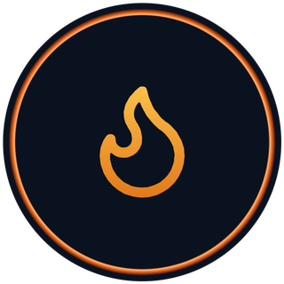
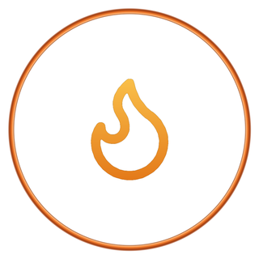

PYROS™AccompagnementLes 13 chantiers — touche pour ouvrir le détail complet
Salle pleine, équipe au taquet, 60 heures par semaine. Et à la fin du mois, ce sont les fournisseurs, l'URSSAF et le bailleur qui sont payés. Pas toi. Que tu aies quarante couverts ou que tu travailles seul.
Où part chaque euro encaissé
Ratios vs repères du secteur
Qui on accompagne
Le constat
Le chiffre d'affaires est un volume. Le résultat est une différence. Personne ne vit d'un volume.
On peut faire un million et finir l'année à découvert. Ça arrive tous les mois, dans ta rue.
Quatre choses que personne ne regarde
La preuve, pas le discours
Onze zones, passées dans l'ordre du trajet réel d'un produit. Chaque point est noté conforme ou problème, et chaque problème remonte dans tes priorités.
À qui on parle
Le sérieux de la méthode ne change pas. Ce qu'on attaque en premier, si.
Le périmètre
Chaque bulle ouvre le détail complet : les points qu'on contrôle, les chiffres qu'on sort, les erreurs qu'on trouve dans neuf maisons sur dix. Ce n'est pas dans la page — c'est derrière le clic.
L'audit terrain
On suit le trajet réel d'un produit, de sa réception à son encaissement. Rien n'est laissé à l'impression.
Tu le gardes, même si on ne travaille pas ensemble.
Chaque terme qu'on emploie pendant l'audit, tu peux l'ouvrir ici : définition, formule de calcul, repère du secteur, et surtout ce que ça change pour toi.
Ce que tu es en train de te dire
La méthode
La plupart des cabinets s'arrêtent au premier temps. C'est au troisième que l'argent se gagne.
Remplir
Trois choses différentes, dans cet ordre. La plupart des maisons paient pour la première, négligent la deuxième et oublient la troisième — qui est pourtant la moins chère.
Deux façons d'avoir des clients
La première catégorie, tu ne la commandes pas. La seconde, si. C'est la seule qui remplit un service précis, à une date précise.
Un mardi creux ne se remplit pas avec de la visibilité. Il se remplit avec un message envoyé à des gens qui sont déjà venus.
En vidéo
Études de cas
Quatre situations, du restaurant de centre-ville au chef qui travaille seul. Situation de départ, chiffres constatés, ce qu'on a attaqué, résultat.
Ces quatre cas sont des cas de figure, construits à partir de situations que l'on rencontre couramment. Ils seront remplacés par de vraies missions au fur et à mesure — et uniquement avec l'autorisation écrite du client concerné. Un prospect qui demande « c'était quelle maison ? » doit obtenir une réponse.
L'accompagnement
Le pilotage par KPI est inclus dans les trois. Ce qui change, c'est la profondeur : le nombre de chantiers qu'on ouvre, le nombre de fois où on vient, et le temps qu'on reste.
Campagne en cours : quelques audits offerts en visio ce mois-ci, en échange d'un retour honnête.
Questions pratiques
Le déroulé, les délais, l'argent et la confidentialité. Si une question manque, pose-la — on répond avant que tu signes quoi que ce soit.
Diagnostic express — 12 questions
Ce sont les questions qu'on pose en arrivant chez un client. Deux minutes, aucune inscription, tout reste sur ton appareil. À la fin tu obtiens ton niveau de risque, tes trois priorités, et le message prêt à nous envoyer.